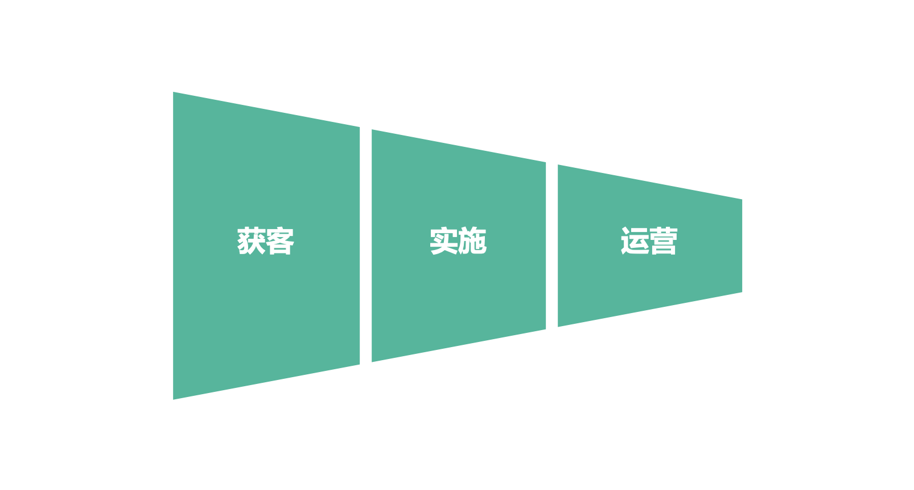

（1）
前些时候，在文章《2B时代的业务快速增长，面临这8大获客挑战》中，斯岱君提到了2B业务的获客挑战；在文中，还提及2B业务的快速增长，除了获客挑战外，还有交付和运营的挑战。

对于2B业务，其产品的复杂性往往较高，或者有一定的个性化定制，因而在获客之后，不是直接交付一款产品就结束整个业务流程，还需要对产品进行实施，实施之后进行运营。
获客只是业务流程的开始，也是获得销售收入的开始，中间的实施、运营等都会按照不同的阶段，获得相应的销售收入。
一家2B的公司，也许一年的销售合同额很高，但当年的实际销售收入，可能没有合同上签署的那么高。钱不一定会在当年全部收回，因为实施和运营的业务流程未必会在当年执行完成。
实施和运营的效果，也决定了企业的销售收入。2B业务企业，想要获得业务快速增长，除了在获客上下功夫之外，良好的实施交付和运营是基础保障。
（2）
如果整个业务流程中，没有实施和运营，只在获客后直接交付一产品，这类2B业务和普通的2C业务没有本质区别，只不过面向的客户是B端客户而已。
正因为在多数的2B业务中，包含着实施和运营，而且实施和运营的复杂度较大、独特性还比较高，造成了2B业务整体难度的增加。也因为实施和运营的存在，让2B业务的获客跟2C业务有了很大的区别。
如果说获客，更多的是获取客户的需求、把握准客户的需求，实施和运营就是实打实的交付产品、落地实施解决方案，以满足客户的需求。实施和运营的复杂性，让客户无法很轻易的看到产品或解决方案的有效性，在最终落地之前，也无法确保对客户需求的满足程度，因而企业客户在做出购买决策时，会非常的小心谨慎，考虑的因素较多，因而就有了之前文章提到的2B业务获客所面临的8大挑战。
如何解决这些问题呢？如何降低实施和运营的复杂度呢？大家能直接想到的答案是做标准化产品！但是这是最不可行的一条路——为什么呢？
（3）
先回到一切业务的起点，即需求。
什么是需求呢？心理学上的定义是：需求是由个体在生理上或心理上感到某种欠缺而力求获得满足的一种内心状态，它是个体进行各种活动的基本动力。
简单而言，需求就是我们遇到一些问题，自己搞不定，感到有所欠缺，想要获得问题的解决，欲望得到满足。对于企业而言，需求的描述也是类似的。
要注意的是，需求并不是凭空出现的，而是在一定的「场景」之下的。在一定的「场景」下，你遇到了问题，就会产生需求。抛开「场景」谈需求，就过于空泛而无意义了。
2C业务，面向于个体的需求，相对比较简单。人与人多数场景下都是类似的，比如饿了都会想吃饭，渴了都会想喝水，困了也都会想睡觉，没钱了就想着多挣点钱……你并不孤独，你有一个什么欲望，实际上跟你有相同或类似欲望的人成千上万。
2B业务，面向于企业的需求，复杂度就比较高了。每一个B端的客户，因为各种原因，他们所处的商业环境各不相同，他们的业务也各不相同，由此造成了他们不可能存在相同的场景，继而在不同的场景下的需求也各不相同。
换句话说，每一个B端客户其处境与其他客户不同、其面对的场景也各有其特殊性，自然想要解决的问题也各有不同了。
想要通过一个场景打动每一个B端客户，想要通过一款标准化的产品赢得每一个B端客户，几乎是不可能的事情。
（4）
再从另外的角度，来看待2B产品标准化。
假如说，一个团队相当的厉害，针对某个2B领域做出来一款标准化的产品，并推向市场，取得了很好的商业成果。在标准化产品的逻辑下，产品的研发厂商只要开发出来标准化产品，就能够获得暴利。关于这一点，请参考桌面时代的微软！
而在当下的商业环境下，各种技术手段、技术人才都极大丰富，只要一款利润较高的产品面世，很快就会有大量的团队进行复制，几乎不出三个月都会有复制出来的不错的相同或类似的产品。关于这一点，请参考互联网时代以来，各种大战！
一旦某一领域一款标准化的产品出来，其他厂商进行复制，而后一番大战，标准化产品的价格很快变得极低，其产品的价值也就很低。于是，在这个领域内的厂商，必然会寻找其他的业务的增长点，寻找能不被别人复制的增长点，自然就会瞄准那些别人解决不了而自己能解决的个性化的需求去做了。
从这么一个逻辑思考下来，如果2B服务厂商通过产品占领市场，所谓的标准化产品最终只能沦为韭菜，并不能成为其竞争壁垒，结果必然会走向个性化的需求满足。
（5）
B端客户的独特处境、独特需求，让产品标准化几乎不可能；就算可能做出来标准化产品，又无法成为2B服务厂商的核心壁垒性的业务，那么2B的产品和业务的出路究竟在何方呢？
斯岱君认为，服务化、运营商化，是2B服务厂商必然要走的路线。
什么是服务化、运营商化呢？简单来说，就是成为B端客户的合作伙伴或服务运营商，长时间为他们提供他们所需要的服务。
B端客户所需求的，不是什么产品，也不是什么服务，而是它们所缺乏的某种能力。如果它们具备这种能力的话，它们自己就搞定自己的需求，不需要找什么2B服务厂商；如果它们不具备这个能力的话，只要它们的业务还在继续，它们就会持续的、长久的需要这种能力。
与B端客户建立长期的关系，在2B服务厂商的业务范围内，为B端客户提供它们所缺乏的能力，持续的做它们的生意，为它们提供服务。
这么做的好处有几个：
其一、建立长期的关系，信任度有保障。销售要解决的最大的问题，就是建立信任问题。而建立了长期关系，后续的合作有了信任基础，其销售成本就会很低。这也就是所谓回头客的重要性！
其二、有了长期的合作，对B端客户的业务有较深入的了解，能够更好的为客户提供满意的服务；而且双方有了合作的基础，相互配合起来也更容易；
其三、有了长期的合作，2B服务厂商对客户的业务有持续的理解，后续服务的实施、运营的成本都会极大的降低，因为不需要每次都要重新理解客户的需求和业务，相当于在做重复/半重复的服务；
其四、有了长期的合作关系，2B服务厂商就有了持续收入的基础保障，2B服务厂商增长可以重点放在获客上；随着长期服务的客户数量越来越多，2B服务厂商的规模也会越来越大；
其五、建立并维持长期的合作关系，以及有较大的合作客户数量，对2B服务厂商有很强大的信任背书效应，能让2B服务厂商快速的与新客户建立信任，从而加快获客速度。
因而，在2B业务领域，只是单纯的卖产品，或者单纯的一个一个做独立的项目，都很难让2B服务厂商快速增长。获取快速增长的最好方式，是成为客户的长期服务提供商和运营商，持续不断的为客户提供他们所缺乏的能力，持续不断的为客户带来价值。